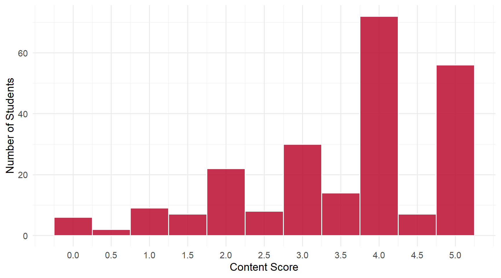
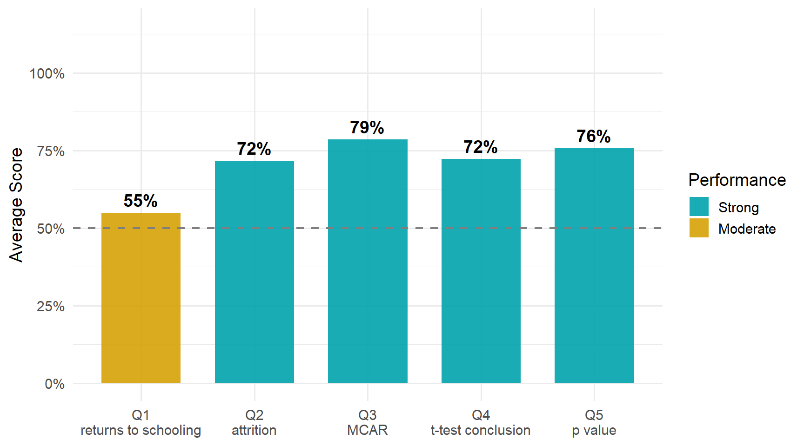

5 Daily 10 — Sep 22
5.1 Class Performance
Students: 233 | Content mean: 3.53 / 5 | Median: 4 | SD: 1.30 | Mean daily score (as graded): 9.41 / 10
Content scores ranged from 0 to 5 out of 5. (Your daily score adds the 8-point attendance credit for submitting; each question is worth 0.4 of the remaining 2 points.)
NoteAbout Q4 and Q5
The output that Q4 and Q5 depend on was not clearly displayed in the early section. So in the gradebook, every student received full credit on Q4 and Q5, in both sections, whatever they wrote.
This page reports how the class actually answered all five questions, because that is what it is for — so its averages are lower than the gradebook’s. It combines both sections, so read the Q4 and Q5 results with the display problem in mind.
Two lessons stand out in this daily’s errors: report a number exactly as the output prints it, and make sure your conclusion follows from your own p value.
5.2 Score Distribution
5.3 Performance by Question

ImportantThe pattern worth taking from this daily
Report the number the output gives you.
Q1 was all-or-nothing, and most of the students who missed it wrote “4” where Figure 5 reports 3.94 — usually with the other two blanks exactly right. One rounding cost the whole question.
That rounding is not harmless, because the question is a comparison. Figure 5 puts the return at 3.94 percent; Figure 6, after adjusting for IQ, puts it at 2.63 — a drop of about 1.3 points, and that drop is the point of the comparison. Round the first to 4 and you have changed the very estimate the comparison is about; round both to whole numbers, 4 and 3, and the drop shrinks to 1 point.
When a question asks what a figure reports, report what it reports. “3.94” and “3.9” both earned full credit; “4” did not.
5.4 Questions
5.4.1 Q1: Figure 5’s return to schooling is ___%; after adjusting for IQ, Figure 6’s falls to ___%, so Figure 5’s estimate is biased ___.
TipCorrect Answer
3.9 percent and 2.6 percent — or 3.94 and 2.63, exactly as printed — so the Figure 5 estimate is biased upward.
Adding IQ to the regression lowers the estimated return from 3.9 to 2.6 percent. If the estimate falls once IQ is held fixed, the estimate without it was too high. Ability tends to raise both schooling and earnings, so leaving it out credits schooling with part of what ability is doing.
WarningCommon Errors
- “4” for 3.94. By far the most common error. See the callout above.
- “Downward” with both numbers right. The estimate falls when IQ is added, which means it was too high before — biased upward. Several students read both figures correctly and then reversed the direction.
- Unscaled coefficients — “0.039”, “0.0394”, “0.026”. Those are the raw regression coefficients. The blanks ask for percentages, which are those numbers times 100.
- Rounding or misreading the second number — “3”, “2”, “2.3”, “2.8” for 2.6.
- Two values in one blank — “4 or 3.94”, or 3.94 added as a note beside an answer of 4. A blank takes one answer; write the one you mean.
- Only two of the three blanks filled.
5.4.2 Q2: Project STAR students who move away cause ___, a form of unit nonresponse.
TipCorrect Answer
Attrition — subjects leaving a study after it has started. Because whole observations go missing, it is a form of unit nonresponse.
WarningCommon Errors
- “Attribution.” A different word, and it appeared repeatedly.
- “Attenuation.” Also a real term, but from the measurement-error lecture: it is the bias that shrinks an estimate toward zero. It has nothing to do with subjects leaving a study.
- General words for missingness — “missing data”, “lost data”, “bias”, “error”. True, but not the name of this particular way data go missing.
- “Sample selection” or “selection bias.” The right family, and it earned half credit — attrition is one kind of selection problem, but the question asked for its name.
- Reshuffling the stem — “missing unit”, “nonresponse bias”, “item nonresponse”. The stem already names the category; the blank asks what causes it here.
Creative spellings of attrition were common and cost nothing.
5.4.3 Q3: If the selection mechanism is independent of X and Y, the data are missing ___.
TipCorrect Answer
Completely at random — MCAR.
- MCAR: whether an observation is missing has nothing to do with either X or
- MAR (missing at random): missingness may depend on X, but not on Y once X is accounted for.
The one word completely is the whole difference between them.
WarningCommon Errors
- “At random”, “MAR”, or just “random.” The dominant partial answer, and it earned half credit. The idea is there; the distinction the question tests is not.
- Terms from other lectures — “relevance”, “correlation”, “confounding”, “bias”. These suggest the question was not connected to missing-data mechanisms at all.
5.4.4 Q4: In the t test of no difference between regular and regular+aide classes, the test statistic says we ___ the null at the 5-percent level.
TipCorrect Answer
We cannot reject the null — equivalently, we fail to reject it.
WarningCommon Errors
- “Reject.” The dominant error. See below.
- “Accept the null.” The right conclusion in the wrong language, and it earned half credit. A test never accepts a null hypothesis; it only fails to find enough evidence against it.
- “Fail” or “fail to” on its own — the direction is right, but the key word reject is missing. Half credit.
- Words that are not a conclusion — “exceed”, “estimate”.
ImportantWorth Your Attention
Of the 58 students who missed Q4 — most of them by writing “reject” — 31 gave the p value as about .89 on Q5, on the same sheet.
Those two answers contradict each other. A p value of .89 says that if there were truly no difference between the two kinds of class, about 89 percent of samples would show a gap at least as large as this one. That is not evidence against the null; it is about as unremarkable as a result can be.
The rule connecting the two answers is short: at the 5-percent level, reject only when p is below .05. Before handing in, read your conclusion against your own p value. If they disagree, one of them is wrong.
5.4.5 Q5: The p value for that test is ___ (rounded to 2 decimal places).
TipCorrect Answer
About .89. The unrounded value was also accepted, so long as it rounds to .89.
WarningCommon Errors
- The wrong quantity — “0.05” (the significance level), “1.96” (the critical value), or the t statistic itself (about 0.14, with or without its minus sign). Each is a real number from the test, but not the p value.
- Copying slips. Many students copied the unrounded value, 0.8901, which was fine — but miscopies such as “0.0901”, “0.8981”, “.901” and “0.389” do not round to .89. When you copy four digits, check all four.
- A small p value — “.02”, “.03”, “.13”, “.19” — probably read from a different line of the output. These often came with “reject” on Q4, which at least makes the two answers consistent with each other, but both were wrong.
- “0.9”, or a stray minus sign — the right number in the wrong form. Half credit. A p value is a probability, so it is never negative.
5.5 What the Class Did Well
Most Q1 answers that earned credit were read straight off the figures. About three quarters of them gave 3.94 and 2.63, exactly as printed, rather than rounding at all.
Most of the class had the missing-data vocabulary. 70 percent named attrition, and 73 percent gave the full answer on Q3 — “completely at random”, or MCAR.
Most students located the p value. 75 percent reported it correctly.
5.6 What to Review
- Report numbers as the output prints them, unless the question asks you to round — and then round only as far as it asks.
- Your conclusion must follow from your p value. At the 5-percent level, reject only when p is below .05.
- A test never accepts the null. Say that you fail to reject it.
- MCAR versus MAR. Completely at random means independent of both X and
- Attrition, attenuation, attribution — three different words, and only one of them is about losing subjects.
NoteHow this was graded
Every paper was scored twice, independently, against the same published rubric, by graders who could not see each other’s scores or your name. The two passes agreed on more than 98% of all scores; every disagreement was reviewed a third time against the rubric and settled with a written reason. Submitting the daily earns 8 of 10 regardless of content.